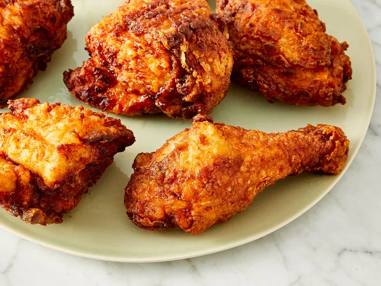
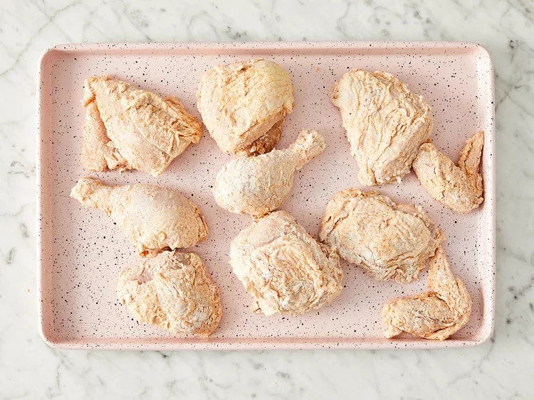
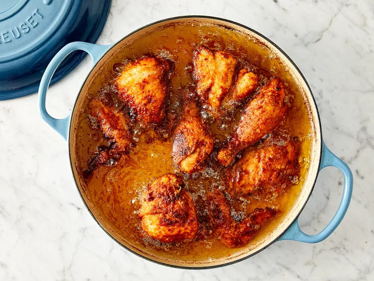

Home
Crispy Fried Chicken

Description
Crispy fried chicken is a dish where chicken pieces are coated in a seasoned flour or batter mixture and deep-fried until the exterior becomes golden brown and audibly crunchy, creating a delightful textural contrast with the tender, juicy meat inside.
Key characteristics include a shatteringly crispy, flavorful crust, moist and flavorful meat thanks to brining or marinating, and a savory taste developed through spices and the Maillard reaction during frying. It is a popular comfort food enjoyed as a main dish or snack, highlighting the contrast between its crunchy outside and succulent interior.
Ingredients
- 1 (4 pound) chicken, cut into pieces
- 1 cup buttermilk
- 2 cups all-purpose flour for coating
- 1 teaspoon paprika
- salt and pepper to taste
- 2 quarts vegetable oil for frying
Steps
- Take your cut up chicken pieces and skin them if you prefer.
- Place flour in a large plastic bag (let the amount of chicken you are cooking dictate the amount of flour you use). Season flour with paprika (which helps to brown the chicken), salt and pepper.

- Dip chicken pieces in buttermilk then, a few at a time, transfer them into the bag with flour; seal the bag and shake to coat well.

- Place the coated chicken on a cookie sheet or tray, and cover with a clean dish towel or waxed paper. LET SIT UNTIL THE FLOUR IS OF A PASTE-LIKE CONSISTENCY. THIS IS CRUCIAL!

- Fill a large skillet (cast iron is best) about 1/3 to 1/2 full with vegetable oil. Heat until VERY hot.
- Put in as many chicken pieces as the skillet can hold. Brown the chicken in HOT oil on both sides.

- When browned, reduce heat and cover skillet; let cook for 30 minutes (the chicken will be cooked through but not crispy). Remove cover, raise heat again, and continue to fry until crispy.
- Drain fried chicken on paper towels. Depending on how much chicken you have, you may have to fry in a few shifts. Keep the finished chicken in a slightly warm oven while preparing the rest.